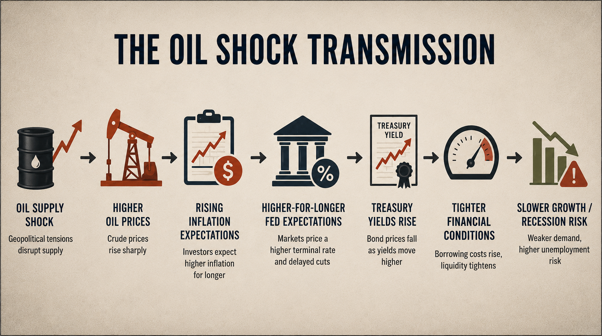

The prospect of a military conflict involving Iran has reintroduced a familiar, but largely disregarded, risk in financial markets: a sustained energy crisis with potentially catastrophic macroeconomic consequences. While news outlets are busy reporting on military escalation and crude oil prices, a more impactful story is pending in the US Treasury market, where asset prices continuously reprice expectations surrounding inflation, growth, and monetary policy. Because of Iran’s vicinity to the Strait of Hormuz, even the perception of instability can alter inflation expectations, yield curve dynamics, and introduce a greater uncertainty into the Federal Reserve’s policy direction. Higher prices at the pump represent only the most immediate consequence of an oil shock, while the more significant effects emerge through the destablization of inflation expectations at a moment when Treasury markets are highly sensitive to inflation persistence.
Oil and the Global Economy
Markets are so reliant on oil, that even a small fluctuation in its price can produce a ripple effect across every sector of the economy. When crude oil prices rise, transportation and energy costs increase, supply chains become more expensive to operate, and firms often pass those costs onto customers through higher prices. This dynamic makes the price of oil one of the most influential drivers of inflation expectations. Energy shocks have repeatedly demonstrated an ability to alter growth trajectories, weaken consumer purchasing power, and hinder the ability of central banks to balance inflation control and stable economic growth.
Bond markets care deeply about oil because Treasury yields are fundamentally tied to expectations surrounding inflation, growth, and monetary policy. If investors believe that inflation will remain elevated, Treasury markets may begin pricing in tighter monetary policy, pushing yields higher and bond prices lower. This dynamic is particularly consequential due to the highly sensitive nature of global markets to inflation expectations, following several years of tight monetary policy.

Oil, Deficits, and a Fragile Bond Market
An oil shock under current market conditions has potentially catastrophic implications. The issue is not limited to increased inflation, but it is coming at a time when bond investors are deeply concerned about inflation persistence, fiscal sustainability, and the mounting burden of government debt entering the market.
Federal deficits remain historically large outside of a recessionary environment, forcing the Treasury to issue massive amounts of new debt to fund expanding government expenditures. As a result, the supply of Treasury securities has increased dramatically over recent years. This is significant because bond markets must continuously absorb new issuances, and the willingness of investors to do so depends heavily on fiscal credibility.
At the same time, in an effort to normalize monetary policy and reduce inflation, the Federal Reserve is no longer serving as a stabilizing buyer of Treasuries through quantitative easing. In the aftermath of the 2008 financial crisis and COVID-19 shock, the Fed absorbed large amounts of long-term Treasury securities from the market, removing duration risk exposure from private investors. Today, that dynamic has reversed. As the Fed reduces its balance sheet in its efforts to control inflation, private markets have been forced to absorb an expanding supply of long-term Treasury securities, pushing investors to demand higher yields to compensate for increased duration risk exposure.
These market conditions make the prospect of an oil shock especially consequential. In a low inflation environment, markets may have viewed a temporary rise in energy prices as transitory. Today, however, even a moderate disruption in oil supply could cause markets to reassess monetary policy expectations, pushing yields higher as investors price in the possibility of continued quantitative tightening.
As a result, an oil shock may extend beyond energy markets and become the catalyst of wider stress throughout fixed income markets, destabilizing inflation expectations at a time when Treasury markets are already struggling to absorb increased issuance, rising duration supply, and a growing uncertainty surrounding fiscal sustainability.
Inflation Expectations and the Treasury Market
The Treasury market’s sensitivity to oil shocks stems less from the direct impact of higher energy prices and more from what it implies about the future path of inflation and monetary policy.
The Policies
Source Code — Federal Receipts

Source Code — Federal Debt


Where I Stand
Back to BlogViews expressed here are my own and do not represent any institution or employer.